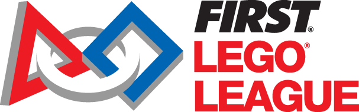

Combinant la lògica de la informàtica amb la creativitat de l'electrònica
Des del transistor fins al programari, construint el futur.
Max Matarrodona Llopart
Estudiant de Doble Grau en Enginyeria Informàtica (Computadors) i Electrònica de Telecomunicació a la UAB.

Sobre mi

La meva passió per la tecnologia va néixer a quart d'ESO, participant a la First Lego League. Una conversa amb el rector de l'Escola d'Enginyeria de la UAB em va obrir els ulls a la possibilitat de combinar dues de les meves grans passions: la lògica i estructura de la informàtica amb la creativitat i aplicació pràctica de l'electrònica a les telecomunicacions.
Em fascina especialment la confluència d'ambdues disciplines: l'arquitectura de computadors, els sistemes encastats, l'electrònica de microones... són àrees que em permeten entendre la tecnologia des del transistor fins al programari. Aquesta visió general del món TIC, on puc crear i transformar idees en realitats tangibles, és el que em manté plenament motivat.
Idiomes: Català, Castellà, Anglès i Francès (DELF B1, après de manera autodidacta).
Experiència professional
Durant juliol i agost de 2025, vaig treballar a Kostal realitzant comprovacions amb AOI, separació de circuits, i proves manuals i automàtiques amb ICT. Aquesta experiència em va permetre adquirir competències en control de qualitat electrònic, maneig d'equips d'inspecció òptica automatitzada, resolució de problemes en línies de producció, i treball en entorns industrials d'alta precisió. Vaig desenvolupar habilitats en la identificació de defectes en plaques de circuit imprès i en l'aplicació de protocols de testing estandarditzats.
Formació i àrees d'interès
Doble Grau
UAB · 2022 - 2027
Enginyeria Informàtica (menció Enginyeria de Computadors) i Enginyeria Electrònica de Telecomunicació.
Assignatures estrella
Temàtiques que m'apassionen
Projectes
Motivació i visió de futur
"Em costa prioritzar en què aprofundir i conèixer el dia a dia d'una empresa, aplicar els meus coneixements fora dels llibres."
Per això, busco constantment connectar la teoria acadèmica amb la pràctica professional. En cinc anys, m'agradaria veure'm treballant com a enginyer en un equip de desenvolupament de productes tecnològics innovadors, especialment en l'àmbit dels sistemes intel·ligents, la robòtica o la microelectrònica.
Aspiro a ser un professional capaç de no només executar solucions, sinó de proposar-les, participant activament en el disseny d'arquitectures maquinari-programari i, més endavant, liderar projectes.
Contacte
Si vols parlar de tecnologia, projectes o oportunitats, no dubtis a escriure'm!
Max.Matarrodona@autonoma.cat